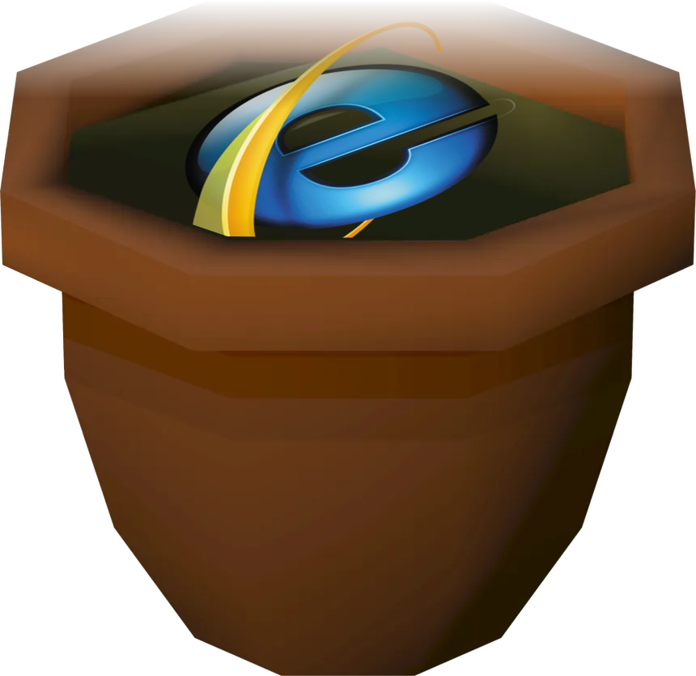

Download Netpot
Download the latest version of Netpot and start managing your network with ease.
Windows 7 / 10 / 11
Download Netpot.bat | Source CodeFun facts:
If you put "netpot.bat" in your startup folder, it will run automatically when you log in!
If you put "netpot.bat" into your system32 folder, you can run it from any command prompt everywhere!
